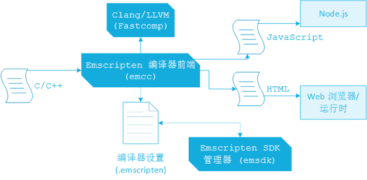
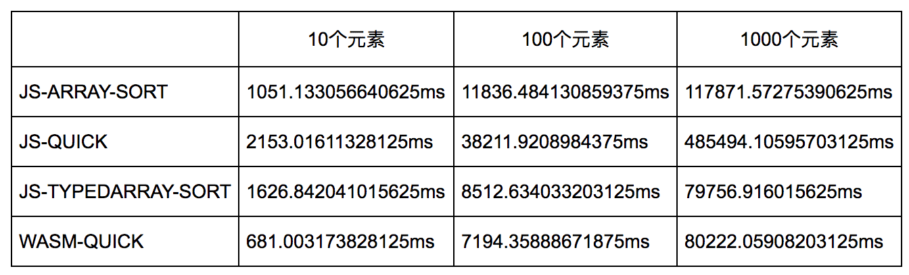

<!DOCTYPE html><html lang="en-us"><head><meta charset="UTF-8"><meta http-equiv="X-UA-Compatible" content="IE=edge,chrome=1"><title>WebAssembly 尝试研究报告（一） | 曜彤.手记</title><meta name="description" content="自 WebAssembly 技术从 2016 年出现开始，便一直受到各方的关注。从宏观上来看，使用该技术我们可以通过把 Web 端的复杂运算逻辑放在 C/C++ 代码实现，并且通过 WebAssembly 提供的 JavaScript 接口来与 C/C++ 代码进行交互，进而达到提升 Web 应用运行性能的目的。该技术的 MVP 标准版本刚发布不久，与 DOM 操作相关功能特性的实现还有待后续标准的进一步完善。"><meta name="generator" content="曜彤.手记"><meta name="about" content="[object Object]"><meta name="keywords" content="博客, C++, C, Rust, Web, Java, IT, 编程, 开发, Android, Python, MySQL, 科技, 黑客, 技术, Javascript, 云, 大数据, 计算, 机器学习, AI, 人工智能, 创业, 产品, 公司, WebAssembly, Wasm"><meta name="HandheldFriendly" content="True"><meta name="MobileOptimized" content="320"><meta name="viewport" content="width=device-width,initial-scale=1.0,maximum-scale=1,user-scalable=0"><link rel="stylesheet" type="text/css" href="/styles/screen.css"><link rel="apple-touch-icon" sizes="57x57" href="/images/apple-touch-icon-57x57.jpg"><link rel="apple-touch-icon" sizes="60x60" href="/images/apple-touch-icon-60x60.jpg"><link rel="apple-touch-icon" sizes="72x72" href="/images/apple-touch-icon-72x72.jpg"><link rel="apple-touch-icon" sizes="76x76" href="/images/apple-touch-icon-76x76.jpg"><link rel="apple-touch-icon" sizes="114x114" href="/images/apple-touch-icon-114x114.jpg"><link rel="apple-touch-icon" sizes="120x120" href="/images/apple-touch-icon-120x120.jpg"><link rel="apple-touch-icon" sizes="144x144" href="/images/apple-touch-icon-144x144.jpg"><link rel="apple-touch-icon" sizes="152x152" href="/images/apple-touch-icon-152x152.jpg"><link rel="apple-touch-icon" sizes="196x196" href="/images/apple-touch-icon-196x196.jpg"><link rel="apple-touch-icon" sizes="310x310" href="/images/apple-touch-icon-310x310.jpg"><link href="/images/splash/iphone5_splash.png" media="(device-width: 320px) and (device-height: 568px) and (-webkit-device-pixel-ratio: 2)" rel="apple-touch-startup-image"><link href="/images/splash/iphone6_splash.png" media="(device-width: 375px) and (device-height: 667px) and (-webkit-device-pixel-ratio: 2)" rel="apple-touch-startup-image"><link href="/images/splash/iphoneplus_splash.png" media="(device-width: 621px) and (device-height: 1104px) and (-webkit-device-pixel-ratio: 3)" rel="apple-touch-startup-image"><link href="/images/splash/iphonex_splash.png" media="(device-width: 375px) and (device-height: 812px) and (-webkit-device-pixel-ratio: 3)" rel="apple-touch-startup-image"><link href="/images/splash/iphonexr_splash.png" media="(device-width: 414px) and (device-height: 896px) and (-webkit-device-pixel-ratio: 2)" rel="apple-touch-startup-image"><link href="/images/splash/iphonexsmax_splash.png" media="(device-width: 414px) and (device-height: 896px) and (-webkit-device-pixel-ratio: 3)" rel="apple-touch-startup-image"><link href="/images/splash/ipad_splash.png" media="(device-width: 768px) and (device-height: 1024px) and (-webkit-device-pixel-ratio: 2)" rel="apple-touch-startup-image"><link href="/images/splash/ipadpro1_splash.png" media="(device-width: 834px) and (device-height: 1112px) and (-webkit-device-pixel-ratio: 2)" rel="apple-touch-startup-image"><link href="/images/splash/ipadpro3_splash.png" media="(device-width: 834px) and (device-height: 1194px) and (-webkit-device-pixel-ratio: 2)" rel="apple-touch-startup-image"><link href="/images/splash/ipadpro2_splash.png" media="(device-width: 1024px) and (device-height: 1366px) and (-webkit-device-pixel-ratio: 2)" rel="apple-touch-startup-image"><link rel="icon" type="image/png" sizes="16x16" href="/images/favicon-16x16.png"><link rel="icon" type="image/png" sizes="32x32" href="/images/favicon-32x32.png"><link rel="icon" type="image/png" sizes="96x96" href="/images/favicon-96x96.png"><link rel="icon" type="image/png" sizes="128x128" href="/images/favicon-128.png"><link rel="icon" type="image/png" sizes="196x196" href="/images/favicon-196x196.png"><meta name="msapplication-TileColor" content="#FFFFFF"><meta name="msapplication-TileImage" content="mstile-144x144.png"><meta name="msapplication-square70x70logo" content="mstile-70x70.png"><meta name="msapplication-square150x150logo" content="mstile-150x150.png"><meta name="msapplication-wide310x150logo" content="mstile-310x150.png"><meta name="msapplication-square310x310logo" content="mstile-310x310.png"><meta name="msapplication-square310x310logo" content="mstile-310x310.png"><link rel="manifest" href="/manifest.webmanifest"><link rel="alternate" type="application/atom+xml" title="Atom 0.3" href="/atom.xml"><link rel="stylesheet" href="/css/prism-okaidia.css" type="text/css">
<link rel="stylesheet" href="/css/prism-line-numbers.css" type="text/css"></head><body itemscope itemtype="https://schema.org/WebPage"><div class="canvas-containter"><span>X</span></div><header itemscope itemtype="https://schema.org/WPHeader"><div class="logo"></div><h1 class="title"><a href="/" alt="曜彤.手记" title="曜彤.手记" itemprop="headline">曜彤.手记</a><a title="Atom 0.3" target="__blank" href="/atom.xml" class="rss"></a></h1><p itemprop="description" class="description">随记，关于互联网技术、产品与创业</p><nav itemscope itemtype="https://schema.org/SiteNavigationElement"><ul><li itemprop="name" class="menu-item"><a href="/ " alt="首页" title="首页" itemprop="url">首页</a></li><li itemprop="name" class="menu-item"><a href="/articles" alt="文章" title="文章" itemprop="url">文章</a></li><li itemprop="name" class="menu-item"><a href="/readings" alt="阅读" title="阅读" itemprop="url">阅读</a></li><li itemprop="name" class="menu-item"><a href="/cards" alt="快记" title="快记" itemprop="url">快记</a></li><li itemprop="name" class="menu-item"><a href="/tags" alt="标签" title="标签" itemprop="url">标签</a></li><li itemprop="name" class="menu-item"><a href="/about" alt="关于" title="关于" itemprop="url">关于</a></li></ul></nav><div class="dynamic-slot"></div><div class="toc-body"><div class="bookmark"></div><ol class="toc"><li class="toc-item toc-level-4"><a class="toc-link" href="#%E4%B8%80%E3%80%81%E5%BC%80%E5%8F%91%E7%8E%AF%E5%A2%83%E6%90%AD%E5%BB%BA%EF%BC%9A"><span class="toc-text">一、开发环境搭建：</span></a></li><li class="toc-item toc-level-4"><a class="toc-link" href="#%E4%BA%8C%E3%80%81%E5%BC%80%E5%8F%91%E5%B7%A5%E5%85%B7%EF%BC%9A"><span class="toc-text">二、开发工具：</span></a></li><li class="toc-item toc-level-4"><a class="toc-link" href="#%E4%B8%89%E3%80%81%E5%8F%91%E5%B1%95%E5%8E%86%E5%8F%B2%EF%BC%9A"><span class="toc-text">三、发展历史：</span></a></li><li class="toc-item toc-level-4"><a class="toc-link" href="#%E5%9B%9B%E3%80%81%E7%BC%96%E8%AF%91%E6%B5%81%E7%A8%8B%EF%BC%9A"><span class="toc-text">四、编译流程：</span></a></li><li class="toc-item toc-level-4"><a class="toc-link" href="#%E4%BA%94%E3%80%81%E6%9C%AC%E5%9C%B0%E5%AE%9E%E9%AA%8C%EF%BC%9A"><span class="toc-text">五、本地实验：</span></a></li></ol></div><div class="space"></div></header><main itemscope itemtype="https://schema.org/Blog"><script src="https://shadow.elemecdn.com/npm/zoomage.js@latest/dist/zoomage.min.js" type="text/javascript"></script><script src="https://shadow.elemecdn.com/npm/axios@0.18.0/dist/axios.min.js" type="text/javascript"></script><script src="/scripts/post.js" type="text/javascript"></script><div class="touch-top"><span></span></div><article post-id="WebAssembly 尝试研究报告（一）" class="full"><h1 itemprop="headline" class="align-center">WebAssembly 尝试研究报告（一）</h1><div class="content"><div class="article-meta"><span class="post-meta"><br>Created on<time itemprop="dateCreated" datetime="2017-06-09T03:55:00.000Z"> 2017 / 06 / 09, 11:55:00</time></span><span class="page-tag-anchor"><a href="/tags/WebAssembly" itemprop="url">#WebAssembly</a>&nbsp;&nbsp;</span></div><p>自 WebAssembly 技术从 2016 年出现开始，便一直受到各方的关注。从宏观上来看，使用该技术我们可以通过把 Web 端的复杂运算逻辑放在 C/C++ 代码实现，并且通过 WebAssembly 提供的 JavaScript 接口来与 C/C++ 代码进行交互，进而达到提升 Web 应用运行性能的目的。该技术的 MVP 标准版本刚发布不久，与 DOM 操作相关功能特性的实现还有待后续标准的进一步完善。</p>
<p>为了迎接 WebAssembly 的怀抱，Chrome 也决定不再支持 PNaCI，并开始全面支持 WebAssembly。毕竟 PNaCI 曾经受到了 Mozilla 的批评，公开指责其违背了“坚持开放和接受 Web 标准”的原则。现在 WebAssembly 已经成为了新的 Web 标准，旨在为了改进 JavaScript 的性能作出贡献。</p>
<h4 id="一、开发环境搭建："><a href="#一、开发环境搭建：" class="headerlink" title="一、开发环境搭建："></a>一、开发环境搭建：</h4><ol>
<li>可以通过 WebAssembly 官方提供的<a target="_blank" rel="noopener" href="http://webassembly.org/getting-started/developers-guide/">开发者文档</a>来选择基于 <strong>Emscripten</strong> 工具链进行开发：</li>
<li>可以通过 <strong><a target="_blank" rel="noopener" href="https://wasdk.github.io/WasmFiddle/">WasmFiddle</a></strong> 进行在线的实时开发、调试和运行；</li>
<li>安装独立的 cmake、gcc、clang、llvm、s2wasm、wast2wasm 等编译器和相关环境；</li>
</ol>
<h4 id="二、开发工具："><a href="#二、开发工具：" class="headerlink" title="二、开发工具："></a>二、开发工具：</h4><p>对于非线上的开发模式，Windows 平台需要安装 Visual Studio；Mac 平台需要安装 XCode。线上模式只需要一个文本编辑器即可。</p>
<h4 id="三、发展历史："><a href="#三、发展历史：" class="headerlink" title="三、发展历史："></a>三、发展历史：</h4><p>JavaScript 引擎的运行经历了遍历 AST、字节码解释器等“原始”阶段，由于需要将每条源代码“翻译”成相应的机器码再执行，同时引擎不会保存“翻译”后的机器码，使得解释执行的速度很慢。接下来 Google 发布了 V8 引擎，由于采用了 JIT 技术，在执行时可以将 JavaScript 代码编译成更高效的机器代码并将热代码保存，下次再次执行同一代码段时便无需再次编译，这使得 JavaScript 语言获得了几十倍的性能提升。但是由于 JS 本身的弱类型，导致引擎在解析同一段代码时会有不同的结果，因此大量的 CPU 资源被浪费在数据类型的判断上。微软开发的 TypeScript 采用了强类型的方式扩展了 JS 的语法特性，从语言层面解决了引擎在判断变量类型上的资源浪费问题。</p>
<p>我们不想去创造一门新的强类型语言来代替 JS，那么有没有办法把现有的静态强类型语言“翻译”到 JS 呢？最早的尝试可以追溯到 95 年的 NPAPI 项目，但更为人所知的应该当属 13 年发布的 ASM.js。ASM.js 是一种 JS 的中间语言，其本质也是基于 JS 的语法，只不过是被特别优化过的。我们可以通过 Emscripten 将 C/C++ 代码传入 LLVM，再将 LLVM 产生的字节码编译成 ASM.js 代码，由于 ASM.js 本身的优化机制限制，导致 ASM.js 本质上只能够处理和优化数值类型。所有的 ASM.js 代码都已经被高度优化，所有的变量类型明确，所有的外部数据都在堆中进行存储和优化，甚至可以直接将 ASM.js 编译成底层的汇编代码而不需要特殊的处理。</p>
<p>但这就可以了吗？看上去不错，通过 ASM.js 我们可以直接用 C/C++ 来编写高性能的 Web 应用，但其缺点也是明显的：编译后的 JS 文件过大，跨浏览器支持不佳等。WebAssembly 为了解决这个问题而诞生了。Wasm 不是一种新的编程语言，而是一种新的字节码格式，这个格式适合将 C/C++ 程序编译到 Web 上来运行，同时又满足了平台无关、高效、轻量等特性。Wasm 可以直接被 JS 引擎加载和执行，省去了从 JS 到 Bytecode，从 Bytecode 再到机器码的转换时间，因此十分高效。Wasm 的文本格式 Wast 包含了一个基于 “S 表达式”的 AST 描述文本，在这个文件中我们可以清楚的看到该 Wasm 模块的导出函数内存分配情况。WebAssembly 的二进制模块格式 Wasm 可以直接通过 JS 引擎提供的 WebAssembly 接口进行调用。</p>
<h4 id="四、编译流程："><a href="#四、编译流程：" class="headerlink" title="四、编译流程："></a>四、编译流程：</h4><p>从 C/C++ 编译到 JS 的流程都大致相同，如果开发流程基于 Em​scripten 工具链，整个编译环境的大致流程如下图所示（转载）：</p>
<p></p>
<p><strong>emcc</strong> 是 Emscripten 的编译器前端，其本身和 GCC 十分相似。emcc 使用 Clang 将 C/C++ 代码转换为 LLVM（源自于底层虚拟机 Low Level Virtual Machine）字节码，使用 Fastcomp（Emscripten 的编译器核心，一个 LLVM 后端）把字节码再编译成 JavaScript 并直接在浏览器中运行。无论是从 ASM.js 到 WebAssembly 二进制代码还是从 Wast 到 Wasm，都可以很方便的通过现有的工具链进行编译和转换。</p>
<h4 id="五、本地实验："><a href="#五、本地实验：" class="headerlink" title="五、本地实验："></a>五、本地实验：</h4><p>我们分别通过使用原生 JS 的排序方法和基于 C/C++ 实现的 Wasm 版本排序方法来对比两种实现的性能差别。</p>
<ul>
<li><strong>实验流程</strong>：实验数据采用随机生成的含有 100 个随机数的数组，通过比较对该数组进行 1e6 次排序所花费的时间来比较两种方式的性能差异。</li>
<li><strong>实验细节</strong>：JS 采用 <code>Array.prototype.sort</code> 方法进行排序，Wasm 采用 C/C++ 实现的快排方法进行排序。</li>
</ul>
<p><strong>1. JavaScript 端排序测试：</strong></p>
<pre class="line-numbers language-javascript"><code class="language-javascript">console<span class="token punctuation">.</span><span class="token function">time</span><span class="token punctuation">(</span><span class="token string">"JS-Native"</span><span class="token punctuation">)</span><span class="token punctuation">;</span>
<span class="token keyword">for</span> <span class="token punctuation">(</span><span class="token keyword">let</span> j <span class="token operator">=</span> <span class="token number">0</span><span class="token punctuation">;</span> j <span class="token operator">&lt;</span> <span class="token number">1000000</span><span class="token punctuation">;</span> j<span class="token operator">++</span><span class="token punctuation">)</span> <span class="token punctuation">{</span>
 <span class="token keyword">let</span> arr <span class="token operator">=</span> <span class="token punctuation">[</span><span class="token punctuation">]</span><span class="token punctuation">;</span>
 <span class="token keyword">for</span> <span class="token punctuation">(</span><span class="token keyword">let</span> i <span class="token operator">=</span> <span class="token number">0</span><span class="token punctuation">;</span> i <span class="token operator">&lt;</span> <span class="token number">100</span><span class="token punctuation">;</span> i<span class="token operator">++</span><span class="token punctuation">)</span> <span class="token punctuation">{</span> 
   arr<span class="token punctuation">.</span><span class="token function">push</span><span class="token punctuation">(</span>Math<span class="token punctuation">.</span><span class="token function">round</span><span class="token punctuation">(</span>Math<span class="token punctuation">.</span><span class="token function">random</span><span class="token punctuation">(</span><span class="token punctuation">)</span> <span class="token operator">*</span> <span class="token number">100</span><span class="token punctuation">)</span><span class="token punctuation">)</span><span class="token punctuation">;</span>
 <span class="token punctuation">}</span>
 arr<span class="token punctuation">.</span><span class="token function">sort</span><span class="token punctuation">(</span><span class="token punctuation">(</span>a<span class="token punctuation">,</span> b<span class="token punctuation">)</span> <span class="token operator">=</span><span class="token operator">></span> <span class="token punctuation">{</span>
   <span class="token keyword">return</span> a <span class="token operator">-</span> b<span class="token punctuation">;</span>
 <span class="token punctuation">}</span><span class="token punctuation">)</span><span class="token punctuation">;</span>
<span class="token punctuation">}</span>
console<span class="token punctuation">.</span><span class="token function">timeEnd</span><span class="token punctuation">(</span><span class="token string">"JS-Native"</span><span class="token punctuation">)</span><span class="token punctuation">;</span>
<span aria-hidden="true" class="line-numbers-rows"><span></span><span></span><span></span><span></span><span></span><span></span><span></span><span></span><span></span><span></span><span></span></span></code></pre>
<p>上述代码为 JS 侧的数组排序代码。下面给出的 C/C++ 数组排序代码我们采用快排的思路来编写。基于 WebAssembly 的开发主要分为两个部分：第一部分为 C/C++ 部分的主要业务处理逻辑，同时设置一些需要在 JS 层面调用的“预置接口”；第二部分是在 JS 层面进行 Wasm 模块的加载与实例化，同时需要进行填充内存数据、导入预置函数等操作。</p>
<p><strong>2. Wasm 端排序测试：</strong></p>
<pre class="line-numbers language-c"><code class="language-c"><span class="token comment" spellcheck="true">// 定义数组大小；</span>
<span class="token macro property">#<span class="token directive keyword">define</span> N 100</span>

<span class="token comment" spellcheck="true">// 预置函数，暴露给 JS 进行处理；</span>
<span class="token keyword">void</span> <span class="token function">print</span><span class="token punctuation">(</span><span class="token keyword">int</span><span class="token operator">*</span> offset<span class="token punctuation">,</span> <span class="token keyword">int</span> length<span class="token punctuation">)</span><span class="token punctuation">;</span>

<span class="token keyword">int</span> array<span class="token punctuation">[</span>N<span class="token punctuation">]</span><span class="token punctuation">;</span>
<span class="token comment" spellcheck="true">// 返回数组在内存中的偏移地址；</span>
<span class="token keyword">int</span><span class="token operator">*</span> <span class="token function">getArrayOffset</span><span class="token punctuation">(</span><span class="token punctuation">)</span> <span class="token punctuation">{</span>
  <span class="token keyword">return</span> array<span class="token punctuation">;</span>
<span class="token punctuation">}</span>

<span class="token keyword">void</span> <span class="token function">swap</span> <span class="token punctuation">(</span><span class="token keyword">int</span> <span class="token operator">*</span>a<span class="token punctuation">,</span> <span class="token keyword">int</span> <span class="token operator">*</span>b<span class="token punctuation">)</span> <span class="token punctuation">{</span>  
  <span class="token keyword">int</span> temp<span class="token punctuation">;</span>  

  temp <span class="token operator">=</span> <span class="token operator">*</span>a<span class="token punctuation">;</span>  
  <span class="token operator">*</span>a <span class="token operator">=</span> <span class="token operator">*</span>b<span class="token punctuation">;</span>  
  <span class="token operator">*</span>b <span class="token operator">=</span> temp<span class="token punctuation">;</span>  

  <span class="token keyword">return</span><span class="token punctuation">;</span>  
<span class="token punctuation">}</span>  
<span class="token comment" spellcheck="true">// 快排实现；</span>
<span class="token keyword">void</span> <span class="token function">quicksort</span><span class="token punctuation">(</span><span class="token keyword">int</span> array<span class="token punctuation">[</span><span class="token punctuation">]</span><span class="token punctuation">,</span> <span class="token keyword">int</span> maxlen<span class="token punctuation">,</span> <span class="token keyword">int</span> begin<span class="token punctuation">,</span> <span class="token keyword">int</span> end<span class="token punctuation">)</span> <span class="token punctuation">{</span>  
  <span class="token keyword">int</span> i<span class="token punctuation">,</span> j<span class="token punctuation">;</span>  

  <span class="token keyword">if</span> <span class="token punctuation">(</span>begin <span class="token operator">&lt;</span> end<span class="token punctuation">)</span> <span class="token punctuation">{</span>  
    i <span class="token operator">=</span> begin <span class="token operator">+</span> <span class="token number">1</span><span class="token punctuation">;</span>
    j <span class="token operator">=</span> end<span class="token punctuation">;</span>      
        
    <span class="token keyword">while</span> <span class="token punctuation">(</span>i <span class="token operator">&lt;</span> j<span class="token punctuation">)</span> <span class="token punctuation">{</span>  
      <span class="token keyword">if</span><span class="token punctuation">(</span>array<span class="token punctuation">[</span>i<span class="token punctuation">]</span> <span class="token operator">></span> array<span class="token punctuation">[</span>begin<span class="token punctuation">]</span><span class="token punctuation">)</span> <span class="token punctuation">{</span>  
        <span class="token function">swap</span><span class="token punctuation">(</span><span class="token operator">&amp;</span>array<span class="token punctuation">[</span>i<span class="token punctuation">]</span><span class="token punctuation">,</span> <span class="token operator">&amp;</span>array<span class="token punctuation">[</span>j<span class="token punctuation">]</span><span class="token punctuation">)</span><span class="token punctuation">;</span> 
        j<span class="token operator">--</span><span class="token punctuation">;</span>  
      <span class="token punctuation">}</span> <span class="token keyword">else</span> <span class="token punctuation">{</span>  
        i<span class="token operator">++</span><span class="token punctuation">;</span>   
      <span class="token punctuation">}</span> 
    <span class="token punctuation">}</span>  

    <span class="token keyword">if</span> <span class="token punctuation">(</span>array<span class="token punctuation">[</span>i<span class="token punctuation">]</span> <span class="token operator">>=</span> array<span class="token punctuation">[</span>begin<span class="token punctuation">]</span><span class="token punctuation">)</span> <span class="token punctuation">{</span>  
      i<span class="token operator">--</span><span class="token punctuation">;</span>  
    <span class="token punctuation">}</span>  

    <span class="token function">swap</span><span class="token punctuation">(</span><span class="token operator">&amp;</span>array<span class="token punctuation">[</span>begin<span class="token punctuation">]</span><span class="token punctuation">,</span> <span class="token operator">&amp;</span>array<span class="token punctuation">[</span>i<span class="token punctuation">]</span><span class="token punctuation">)</span><span class="token punctuation">;</span>  
      
    <span class="token function">quicksort</span><span class="token punctuation">(</span>array<span class="token punctuation">,</span> maxlen<span class="token punctuation">,</span> begin<span class="token punctuation">,</span> i<span class="token punctuation">)</span><span class="token punctuation">;</span>  
    <span class="token function">quicksort</span><span class="token punctuation">(</span>array<span class="token punctuation">,</span> maxlen<span class="token punctuation">,</span> j<span class="token punctuation">,</span> end<span class="token punctuation">)</span><span class="token punctuation">;</span>  
  <span class="token punctuation">}</span>  
<span class="token punctuation">}</span>  

<span class="token keyword">void</span> <span class="token function">test</span> <span class="token punctuation">(</span><span class="token punctuation">)</span> <span class="token punctuation">{</span>
  <span class="token function">quicksort</span><span class="token punctuation">(</span>array<span class="token punctuation">,</span> N<span class="token punctuation">,</span> <span class="token number">0</span><span class="token punctuation">,</span> N <span class="token operator">-</span> <span class="token number">1</span><span class="token punctuation">)</span><span class="token punctuation">;</span>
  <span class="token comment" spellcheck="true">// print(array, N);</span>
<span class="token punctuation">}</span>
<span aria-hidden="true" class="line-numbers-rows"><span></span><span></span><span></span><span></span><span></span><span></span><span></span><span></span><span></span><span></span><span></span><span></span><span></span><span></span><span></span><span></span><span></span><span></span><span></span><span></span><span></span><span></span><span></span><span></span><span></span><span></span><span></span><span></span><span></span><span></span><span></span><span></span><span></span><span></span><span></span><span></span><span></span><span></span><span></span><span></span><span></span><span></span><span></span><span></span><span></span><span></span><span></span><span></span><span></span><span></span><span></span><span></span><span></span></span></code></pre>
<p>上面给出的 C/C++ 端的处理函数主要做了几件事情：</p>
<ol>
<li>暴露了一个方法外壳给 JS 来处理；</li>
<li>提供一个函数用于获得数组在内存中的偏移地址；</li>
<li>核心业务处理逻辑的函数；</li>
<li>一个主函数用于在 JS 中调用；</li>
</ol>
<p>接下来处理 JS 端的 Wasm 接口和数据的填充过程。</p>
<pre class="line-numbers language-javascript"><code class="language-javascript"><span class="token comment" spellcheck="true">// 将 JS 生成的数组数据填充到指定的内存中；</span>
<span class="token keyword">function</span> importArrayToBuffer <span class="token punctuation">(</span>memory<span class="token punctuation">,</span> array<span class="token punctuation">,</span> offset<span class="token punctuation">)</span> <span class="token punctuation">{</span>
  <span class="token keyword">const</span> importBuffer <span class="token operator">=</span> <span class="token keyword">new</span> <span class="token class-name">Uint32Array</span><span class="token punctuation">(</span>memory<span class="token punctuation">.</span>buffer<span class="token punctuation">,</span> offset<span class="token punctuation">,</span> array<span class="token punctuation">.</span>lenth<span class="token punctuation">)</span><span class="token punctuation">;</span>
  <span class="token keyword">for</span> <span class="token punctuation">(</span><span class="token keyword">let</span> i <span class="token operator">=</span> <span class="token number">0</span><span class="token punctuation">;</span> i <span class="token operator">&lt;</span> array<span class="token punctuation">.</span>length<span class="token punctuation">;</span> i<span class="token operator">++</span><span class="token punctuation">)</span> <span class="token punctuation">{</span>
    importBuffer<span class="token punctuation">[</span>i<span class="token punctuation">]</span> <span class="token operator">=</span> array<span class="token punctuation">[</span>i<span class="token punctuation">]</span><span class="token punctuation">;</span>
  <span class="token punctuation">}</span>
<span class="token punctuation">}</span>

<span class="token keyword">let</span> memory<span class="token punctuation">;</span>
<span class="token comment" spellcheck="true">// 通过浏览器提供的 WebAssembly 接口来加载一个 Wasm 模块；</span>
WebAssembly<span class="token punctuation">.</span><span class="token function">compile</span><span class="token punctuation">(</span>wasmCode<span class="token punctuation">)</span><span class="token punctuation">.</span><span class="token function">then</span><span class="token punctuation">(</span>module <span class="token operator">=</span><span class="token operator">></span> WebAssembly<span class="token punctuation">.</span><span class="token function">instantiate</span><span class="token punctuation">(</span>module<span class="token punctuation">,</span> <span class="token punctuation">{</span>
  env<span class="token punctuation">:</span> <span class="token punctuation">{</span>
    <span class="token comment" spellcheck="true">// 填充预置函数的主体；</span>
    print <span class="token punctuation">(</span>offset<span class="token punctuation">,</span> len<span class="token punctuation">)</span> <span class="token punctuation">{</span>
      <span class="token keyword">let</span> strBuffer <span class="token operator">=</span> <span class="token keyword">new</span> <span class="token class-name">Uint32Array</span><span class="token punctuation">(</span>memory<span class="token punctuation">.</span>buffer<span class="token punctuation">,</span> offset<span class="token punctuation">,</span> len<span class="token punctuation">)</span><span class="token punctuation">;</span>
      console<span class="token punctuation">.</span><span class="token function">log</span><span class="token punctuation">(</span>strBuffer<span class="token punctuation">)</span><span class="token punctuation">;</span>
    <span class="token punctuation">}</span>
  <span class="token punctuation">}</span>
<span class="token punctuation">}</span><span class="token punctuation">)</span><span class="token punctuation">)</span><span class="token punctuation">.</span><span class="token function">then</span><span class="token punctuation">(</span>instance <span class="token operator">=</span><span class="token operator">></span> <span class="token punctuation">{</span>
  <span class="token keyword">let</span> exports <span class="token operator">=</span> instance<span class="token punctuation">.</span>exports<span class="token punctuation">;</span>
  memory <span class="token operator">=</span> exports<span class="token punctuation">.</span>memory<span class="token punctuation">;</span>
  console<span class="token punctuation">.</span><span class="token function">time</span><span class="token punctuation">(</span><span class="token string">"WASM"</span><span class="token punctuation">)</span><span class="token punctuation">;</span>
  <span class="token comment" spellcheck="true">// 开始测试；</span>
  <span class="token keyword">for</span> <span class="token punctuation">(</span><span class="token keyword">let</span> j <span class="token operator">=</span> <span class="token number">0</span><span class="token punctuation">;</span> j <span class="token operator">&lt;</span> <span class="token number">1000000</span><span class="token punctuation">;</span> j<span class="token operator">++</span><span class="token punctuation">)</span> <span class="token punctuation">{</span>
    <span class="token keyword">let</span> arr <span class="token operator">=</span> <span class="token punctuation">[</span><span class="token punctuation">]</span><span class="token punctuation">;</span>
    <span class="token keyword">for</span> <span class="token punctuation">(</span><span class="token keyword">let</span> i <span class="token operator">=</span> <span class="token number">0</span><span class="token punctuation">;</span> i <span class="token operator">&lt;</span> <span class="token number">100</span><span class="token punctuation">;</span> i<span class="token operator">++</span><span class="token punctuation">)</span> <span class="token punctuation">{</span> 
      arr<span class="token punctuation">.</span><span class="token function">push</span><span class="token punctuation">(</span>Math<span class="token punctuation">.</span><span class="token function">round</span><span class="token punctuation">(</span>Math<span class="token punctuation">.</span><span class="token function">random</span><span class="token punctuation">(</span><span class="token punctuation">)</span> <span class="token operator">*</span> <span class="token number">100</span><span class="token punctuation">)</span><span class="token punctuation">)</span><span class="token punctuation">;</span>
    <span class="token punctuation">}</span>
    <span class="token comment" spellcheck="true">// console.log("[Generated Array] ", arr);</span>
    <span class="token comment" spellcheck="true">// 填充数据到指定内存段；</span>
    <span class="token function">importArrayToBuffer</span><span class="token punctuation">(</span>memory<span class="token punctuation">,</span> arr<span class="token punctuation">,</span> exports<span class="token punctuation">.</span><span class="token function">getArrayOffset</span><span class="token punctuation">(</span><span class="token punctuation">)</span><span class="token punctuation">)</span><span class="token punctuation">;</span>
    <span class="token comment" spellcheck="true">// 调用 C/C++ 暴露的逻辑处理函数；</span>
    exports<span class="token punctuation">.</span><span class="token function">test</span><span class="token punctuation">(</span><span class="token punctuation">)</span><span class="token punctuation">;</span>
  <span class="token punctuation">}</span>
  console<span class="token punctuation">.</span><span class="token function">timeEnd</span><span class="token punctuation">(</span><span class="token string">"WASM"</span><span class="token punctuation">)</span><span class="token punctuation">;</span>
<span class="token punctuation">}</span><span class="token punctuation">)</span><span class="token punctuation">;</span>
<span aria-hidden="true" class="line-numbers-rows"><span></span><span></span><span></span><span></span><span></span><span></span><span></span><span></span><span></span><span></span><span></span><span></span><span></span><span></span><span></span><span></span><span></span><span></span><span></span><span></span><span></span><span></span><span></span><span></span><span></span><span></span><span></span><span></span><span></span><span></span><span></span><span></span><span></span><span></span><span></span><span></span></span></code></pre>
<p><strong>3. JS 端快排测试：</strong></p>
<p>为了增强对照实验的准确性，我们又追加了纯 JS 实现的快排来作为第三种对照组实验。实验代码如下：</p>
<pre class="line-numbers language-javascript"><code class="language-javascript"><span class="token comment" spellcheck="true">// 快排实现； </span>
<span class="token keyword">function</span> <span class="token function">quicksort</span><span class="token punctuation">(</span>array<span class="token punctuation">,</span> maxlen<span class="token punctuation">,</span> begin<span class="token punctuation">,</span> end<span class="token punctuation">)</span> <span class="token punctuation">{</span>  
  <span class="token keyword">let</span> i<span class="token punctuation">,</span> j<span class="token punctuation">;</span>  
  
  <span class="token keyword">if</span> <span class="token punctuation">(</span>begin <span class="token operator">&lt;</span> end<span class="token punctuation">)</span> <span class="token punctuation">{</span>  
    i <span class="token operator">=</span> begin <span class="token operator">+</span> <span class="token number">1</span><span class="token punctuation">;</span>
    j <span class="token operator">=</span> end<span class="token punctuation">;</span>      
        
    <span class="token keyword">while</span> <span class="token punctuation">(</span>i <span class="token operator">&lt;</span> j<span class="token punctuation">)</span><span class="token punctuation">{</span>  
      <span class="token keyword">if</span> <span class="token punctuation">(</span>array<span class="token punctuation">[</span>i<span class="token punctuation">]</span> <span class="token operator">></span> array<span class="token punctuation">[</span>begin<span class="token punctuation">]</span><span class="token punctuation">)</span> <span class="token punctuation">{</span>  
        <span class="token keyword">let</span> temp <span class="token operator">=</span> array<span class="token punctuation">[</span>i<span class="token punctuation">]</span><span class="token punctuation">;</span>
        array<span class="token punctuation">[</span>i<span class="token punctuation">]</span> <span class="token operator">=</span> array<span class="token punctuation">[</span>j<span class="token punctuation">]</span><span class="token punctuation">;</span>
        array<span class="token punctuation">[</span>j<span class="token punctuation">]</span> <span class="token operator">=</span> temp<span class="token punctuation">;</span>
    
        j<span class="token operator">--</span><span class="token punctuation">;</span>  
      <span class="token punctuation">}</span> <span class="token keyword">else</span> <span class="token punctuation">{</span>  
        i<span class="token operator">++</span><span class="token punctuation">;</span>   
      <span class="token punctuation">}</span> 
    <span class="token punctuation">}</span>  

    <span class="token keyword">if</span> <span class="token punctuation">(</span>array<span class="token punctuation">[</span>i<span class="token punctuation">]</span> <span class="token operator">>=</span> array<span class="token punctuation">[</span>begin<span class="token punctuation">]</span><span class="token punctuation">)</span> <span class="token punctuation">{</span>  
      i<span class="token operator">--</span><span class="token punctuation">;</span>  
    <span class="token punctuation">}</span>  
  
    <span class="token keyword">let</span> temp <span class="token operator">=</span> array<span class="token punctuation">[</span>begin<span class="token punctuation">]</span><span class="token punctuation">;</span>
    array<span class="token punctuation">[</span>begin<span class="token punctuation">]</span> <span class="token operator">=</span> array<span class="token punctuation">[</span>i<span class="token punctuation">]</span><span class="token punctuation">;</span>
    array<span class="token punctuation">[</span>i<span class="token punctuation">]</span> <span class="token operator">=</span> temp<span class="token punctuation">;</span>
      
    <span class="token function">quicksort</span><span class="token punctuation">(</span>array<span class="token punctuation">,</span> maxlen<span class="token punctuation">,</span> begin<span class="token punctuation">,</span> i<span class="token punctuation">)</span><span class="token punctuation">;</span>  
    <span class="token function">quicksort</span><span class="token punctuation">(</span>array<span class="token punctuation">,</span> maxlen<span class="token punctuation">,</span> j<span class="token punctuation">,</span> end<span class="token punctuation">)</span><span class="token punctuation">;</span>  
  <span class="token punctuation">}</span>  
<span class="token punctuation">}</span>  

<span class="token keyword">function</span> main <span class="token punctuation">(</span><span class="token punctuation">)</span> <span class="token punctuation">{</span>
  console<span class="token punctuation">.</span><span class="token function">time</span><span class="token punctuation">(</span><span class="token string">"JS-Quick"</span><span class="token punctuation">)</span><span class="token punctuation">;</span>
  <span class="token keyword">for</span> <span class="token punctuation">(</span><span class="token keyword">let</span> j <span class="token operator">=</span> <span class="token number">0</span><span class="token punctuation">;</span> j <span class="token operator">&lt;</span> <span class="token number">1000000</span><span class="token punctuation">;</span> j<span class="token operator">++</span><span class="token punctuation">)</span> <span class="token punctuation">{</span>
    <span class="token keyword">let</span> array <span class="token operator">=</span> <span class="token punctuation">[</span><span class="token punctuation">]</span><span class="token punctuation">;</span>
    <span class="token keyword">for</span> <span class="token punctuation">(</span><span class="token keyword">let</span> i <span class="token operator">=</span> <span class="token number">0</span><span class="token punctuation">;</span> i <span class="token operator">&lt;</span> <span class="token number">100</span><span class="token punctuation">;</span> i<span class="token operator">++</span><span class="token punctuation">)</span> <span class="token punctuation">{</span> 
      array<span class="token punctuation">.</span><span class="token function">push</span><span class="token punctuation">(</span>Math<span class="token punctuation">.</span><span class="token function">round</span><span class="token punctuation">(</span>Math<span class="token punctuation">.</span><span class="token function">random</span><span class="token punctuation">(</span><span class="token punctuation">)</span> <span class="token operator">*</span> <span class="token number">100</span><span class="token punctuation">)</span><span class="token punctuation">)</span><span class="token punctuation">;</span>
    <span class="token punctuation">}</span>
    <span class="token function">quicksort</span><span class="token punctuation">(</span>array<span class="token punctuation">,</span> array<span class="token punctuation">.</span>length<span class="token punctuation">,</span> <span class="token number">0</span><span class="token punctuation">,</span> array<span class="token punctuation">.</span>length <span class="token operator">-</span> <span class="token number">1</span><span class="token punctuation">)</span><span class="token punctuation">;</span>
  <span class="token punctuation">}</span>
  console<span class="token punctuation">.</span><span class="token function">timeEnd</span><span class="token punctuation">(</span><span class="token string">"JS-Quick"</span><span class="token punctuation">)</span><span class="token punctuation">;</span>
<span class="token punctuation">}</span>
<span aria-hidden="true" class="line-numbers-rows"><span></span><span></span><span></span><span></span><span></span><span></span><span></span><span></span><span></span><span></span><span></span><span></span><span></span><span></span><span></span><span></span><span></span><span></span><span></span><span></span><span></span><span></span><span></span><span></span><span></span><span></span><span></span><span></span><span></span><span></span><span></span><span></span><span></span><span></span><span></span><span></span><span></span><span></span><span></span><span></span><span></span><span></span><span></span><span></span></span></code></pre>
<p>在<strong>一百万次</strong>对随机生成的含有<strong>100个数字</strong>的数组进行排序所花费的时间：</p>
<ul>
<li><strong>JS-Native：</strong> 11308.10498046875ms</li>
<li><strong>WASM：</strong> 7366.18310546875ms</li>
<li><strong>JS-QUICK：</strong> 38611.242919921875ms</li>
</ul>
<p>WebAssembly 以十分明显的优势胜出。总的来看，从 JS 向固定的内存地址段进行数据填充的过程其实可以有很大的优化空间，比如将业务需要进行处理的数据一次性全部写入内存来代替分次的写入。C/C++ 方面可以对数据结构进行更加灵活的处理，比如在某些情况下使用“链表”等数据结构来大幅度改善程序的运行效率等。</p>
<p>为了更加精准的对 WASM 进行性能评估，我们又追加了不同数组大小的实验样本来作为参照，具体评估结果如下图所示（Mac OS, Chrome Version 58.0.3029.110 (64-bit)）：</p>
<p></p>
<br><div class="article-bottom-meta"><span class="post-meta">Last built on<time itemprop="dateModified" datetime="2017-06-09T03:55:00.000Z"> 2023 / 10 / 26, 11:37:10</time></span></div></div></article><br><span class="next-post"><a href="/2017/06/10/WebAssembly-尝试研究报告（二）/" itemprop="url">下一篇 ⇒</a></span><span class="prev-post"><a href="/2017/05/26/基于-NumPy-和-TensorFlow-的简单-KNN-实现/" itemprop="url">⇐ 上一篇</a></span><br><section id="comments"><div><script src="https://utteranc.es/client.js" repo="Becavalier/utterances-comments" issue-term="title" label="[Comment]" theme="github-light" crossorigin="anonymous" async></script></div></section><br><br></main><script src="/scripts/index.js" type="text/javascript"></script></body></html>